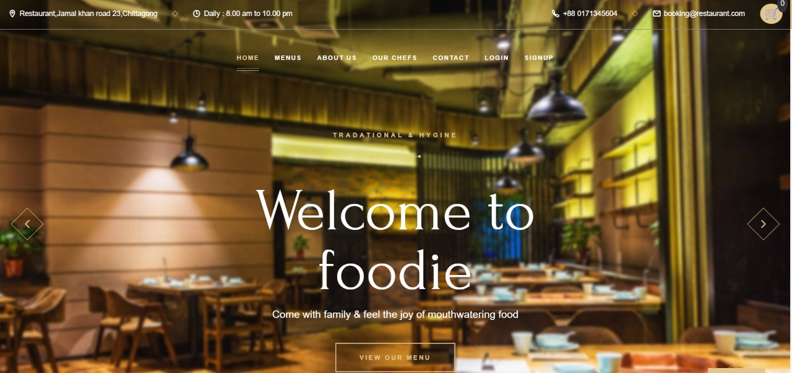

Foodie: Restaurant Management System
Foodie is a web-based system with an admin panel and customer interface to manage food items, customer information, orders, and restaurant operations.
HTMLCSSJavaScriptPHPMySQL
View Project